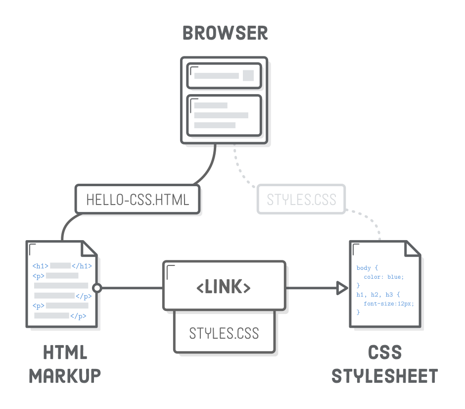
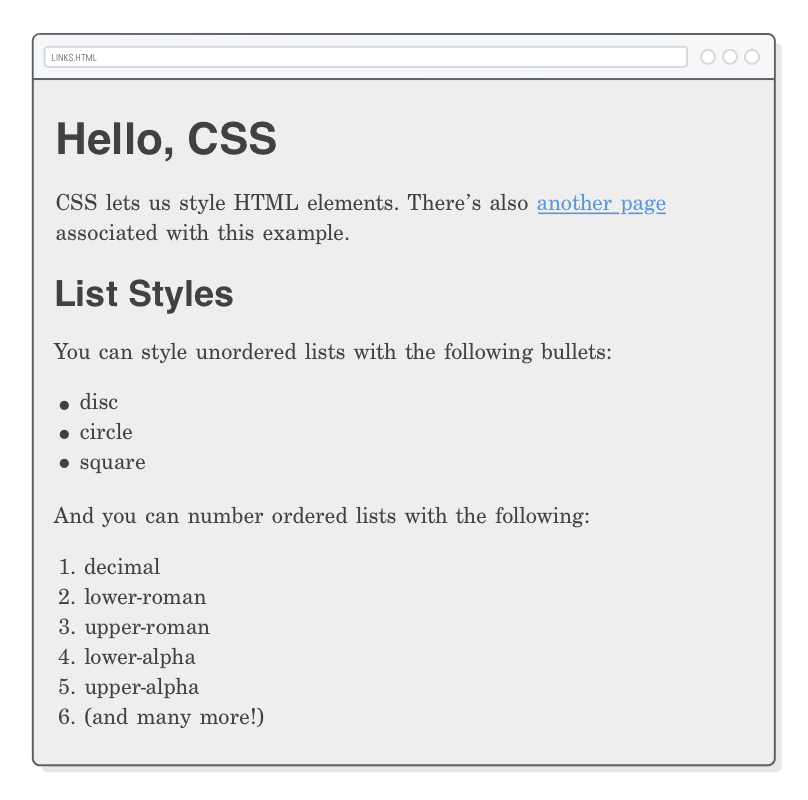
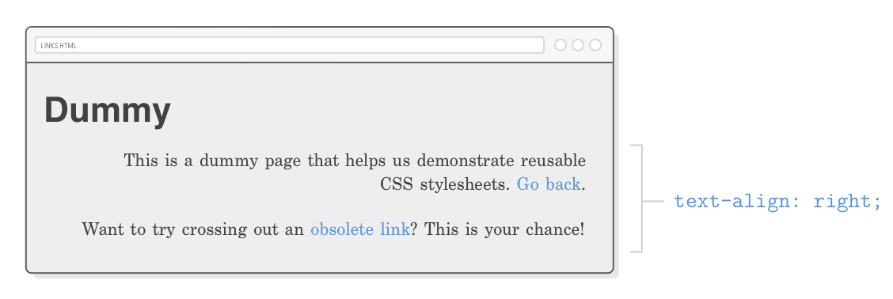
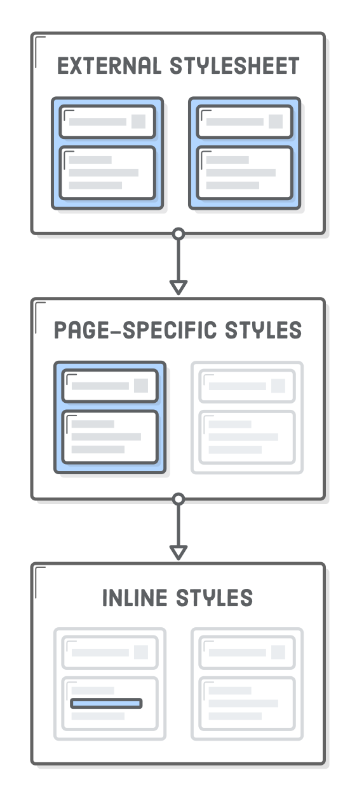
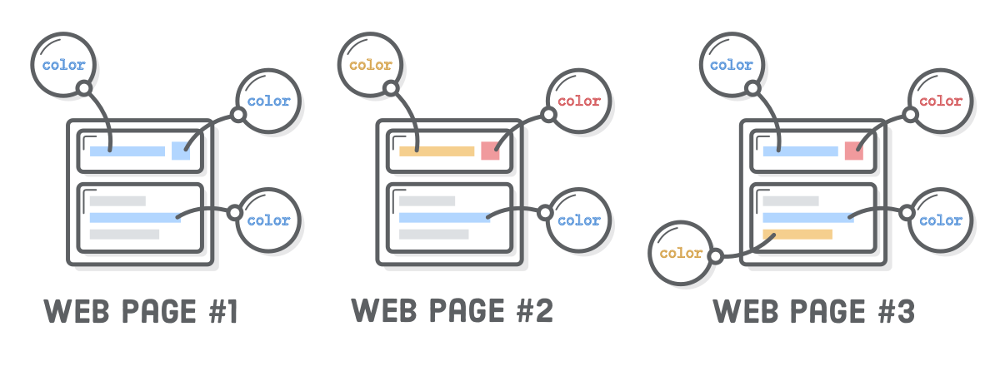

Um tutorial amigável para criar uma página um pouco mais bonita
Os primeiros capítulos desse tutorial focou exclusivamente na HTML.
Agora, está na hora de fazer as coisas (um pouco mais) bonitas com
as Folhas de Estilo em Cascatas (Cascading Style Sheets
CSS). Você pode pensar em CSS como a parte do “design” da página web.
Ela determina coisas como tamanhos, margens e cores usando uma
linguagem totalmente separada da HTML.
Por que uma linguagem separada? Bom, porque ela tem um propósito
totalmente diferente. A HTML apresenta o conteúdo da sua página
web, enquanto a CSS define como aquele conteúdo será apresentado
para o usuário. Essa é diferença fundamental do desenvolvimento
web moderno.
A CSS provê o vocabulário que diz ao navegador coisas como, “eu
quero que o meu cabeçalho seja muito grande e minha barra lateral
apareça no lado esquerdo do conteúdo principal.” A HTML não tem a
terminologia para fazer esses tipos de decisões no leiaute—tudo
que ela pode falar é “isso é um cabeçalho e isso é uma
barra lateral.”
Neste capítulo, vamos explorar a sintaxe básica da CSS, e como
chamar a CSS no documento HTML. O objetivo não é se tornar um
ninja do CSS ou memoriza todas as estilizações disponíveis,
mas entender como a CSS e a HTML interagem. A CSS tipicamente é
definia no seu próprio arquivo, assim como no capítulo anterior, uma
boa organização dos arquivos será necessária.
Configuração
Para manter as coisas o mais simples possível, vamos salvar o exemplo
de cada capítulo desse tutorial em pastas separadas.
Usando o Atom, crie um novo projeto chamado hello-css. Vamos
estilizar uma página já existente chamada hello-css.html,
então vamos nessa e crie esse arquivo, depois adicione a seguinte
marcação:
<!DOCTYPE html><htmllang='en'><head><metacharset='UTF-8'/><title>Olá, CSS</title></head><body><h1>Olá, CSS</h1><p>A CSS nos permite estilizar elementos HTML. Também temos
<ahref='dummy.html'>outra página</a> associada com esse exemplo.</p><h2>Estilos de Listas</h2><p>Você pode estilizar listas não-ordenadas com os seguintes marcadores:</p><ul><li>disco</li><li>circulo</li><li>quadrado</li></ul><p>E você pode numerar listas ordenadas com o seguinte:</p><ol><li>decimal</li><li>números romanos minúsculos</li><li>números romanos maiúsculos</li><li>alfabéticos minúsculos</li><li>alfabéticos maiúsculos</li><li>(e muitos outros!)</li></ol></body></html>
E ainda, vamos precisar de uma pequena página fictícia para
aprender como estilos CSS podem ser aplicados à diferentes
páginas. Crie também o arquivo dummy.html e
adicione o seguinte:
<!DOCTYPE html><htmllang='pt-BR'><head><metacharset='UTF-8'/><title>Modelo</title></head><body><h1>Modelo</h1><p>Essa é uma página fictícia que nos ajudará a demonstrar a reutilização da
folha de estilo CSS. <ahref='hello-css.html'>Voltar</a>.</p><p>Quer tentar riscar um <ahref='nowhere.html'>ligação obsoleta</a>? Essa
é sua chance!</p></body></html>
Folha de estilos CSS
Folhas de estilos CSS são arquivos em texto puro com uma
extensão .css. Crie um novo arquivo chamado
styles.css na sua pasta hello-css.
Ele irá armazenar todos os nossos trechos de exemplos para
esse capítulo. Vamos adicionar uma regra CSS assim podemos
ver se nossa folha de estilo está ligada com nossa página
HTML da forma correta.
body {
color: #FF0000;
}
Uma “regra” CSS sempre inicia com um “seletor” que define a qual
elemento HTML será aplicado. Nesse caso, vamos tentar estilizar
o elemento <body>. Depois do seletor, temos o
“bloco de declaração” dentro de um par de chaves. Qualquer
“propiedade” que configurarmos vai afetar o elemento
<body>.
A propriedade color é uma propriedade nativa
definida pela especificação CSS que determina a cor do texto
para qualquer elemento HTML que tenha sido selecionado. Ela
aceita valores em hexadecimal que representam a cor. O código
#FF0000 representa um vermelho claro.
As propriedades CSS são como os
atributos HTML
de forma que ambos usam um par de chave-valor. Exceto que, aqui
nós estamos definindo a apresentação da informação ao
invés de contribuir para o significado semântico do conteúdo.
Vinculando uma folha de Estilo CSS
Se você tentar carregar qualquer das páginas HTML no navegador, você
não verá nossa estilização em ação. Isso porque nós não vinculamos o
arquivo CSS no documento HTML. Isso é o que o elemento
<link/> faz. No documento hello-css.html,
mude o <head> com o seguinte trecho de código:
Esse elemento <link/> é o responsável por dizer
ao navegador como eles devem carregar o styles.css
quando ele tentar renderizar nossa página hello-css.html.
Nós vamos poder ver agora um vermelho sangrento em todos os textos:
O elemento <link/> é como um elemento
<a>, mas é pra ser usado somente dentro
do <head>. Uma vez que ele está no
cabeçalho do documento HTML, o <link/>
vincula ao metadata que está definido fora do
documento atual. Note que ele é um
elemento vazio então não precisamos de uma etiqueta
de fechamento.
O atributo rel é responsável pelo relacionamento
entre o recurso (CSS) e o documento (HTML). O valor mais comum
utilizado é o stylesheet, mas aqui temos
algumas outras opções. O atributo href
funciona como no capítulo anterior, ele só precisa apontar para um
arquivo .css ao invés de outra página web. O valor para o
href pode ser uma ligação
absoluta, relativa, ou raiz-relativa.

Perceba que não tem um vínculo direto entre o navegador
e nossa folha de estilo. É apenas através da marcação HTML que ele
pode encontrá-la. Imagens, CSS e até mesmo o JavaScript, todos
dependem de páginas HTML para todos fiquem juntos, tornando a HTML
o coração da maioria das páginas web.
Comentários CSS
Agora que nossa folha de estilo está vinculada, vamos brincar
um pouco. Aquele vermelho é terrível! Vamos colocar um cinza
pra ficar mais bonito e agradável para os nossos olhos:
body {
color: #414141; /* Cinza escuro */
}
Note que os comentários em CSS são um pocuo diferente do usado
na HTML. Ao invés da sintaxe <!-- -->, a CSS
ignora tudo que estiver entre /* e
*/.
Configurando Múltiplas Propriedades
Você pode configurar quantas propriedades quiser no bloco de
declaração da regra CSS. Vamos tentar configurar agora uma cor
de fundo para a página toda mudando nossa regra da seguinte
maneira:
A propriedade background-color é muito similar a
propriedade color, mas ela define a cor de fundo de
qualquer elemento que você selecionar. Pare um pouco e admire esses
ponto-vírgula no final de cada declaração. Se você removê-los vai
quebrar a regra CSS, então sempre cuide do ponto-vírgula!
Por que nós usamos tons de cinza ao invés de preto e branco? Usar
um fundo #000000 com um texto #FFFFFF
o contraste é muito grande. Isso faz parecer que a página tá
vibrando, isso pode distrair os leitores.
Selecionando Elementos Diferentes
É claro que você vai querer aplicar estilos a elementos diferentes
do <body>. Para isso, adicione novas regras CSS
com diferentes seletores. Podemos mudar o tamanho da fonte do nosso
cabeçalho <h1> assim:
E, se você quiser mudar o cabeçalho h2, adicione
outra regra:
h2 {
font-size: 28px;
}
Unidades de Medidas
Muitas propriedades CSS precisam de uma unidade de medida. Existem
muitas unidades disponíveis, mas as mais comuns que você
irá encontrar são px (pixel) e em
(pronuncia-se como a letra m). O primeiro é o que
você chama intuitivamente de pixel, independente do usuário
ter ou não um monitor FullHD, e o segundo é o elemento
usado no tamanho da fonte.
A unidade em é muito útil para definição de tamanhos
relativos a uma fonte base. No diagrama acima, você pode ver a
unidade em em escala para combinar com o tamanho da
fonte base de 12px, 16px, e 20px.
Para um exemplo concreto, considere o trecho de código alternativo
ao anterior:
Isso configura o tamanho da nossa fonte base para o documento em
18px, então vamos dizer que nosso elemento
<h1> deve ter duas vezes o tamanho e o nosso
<h2> deve ser 1.6 maior. Se nós (ou o usuário)
quisermos fazer a fonte base maior ou menor, a unidade
em irá permitir que toda nossa página tenha a escala
de acordo.
Selecionando Múltiplos Elementos
E se nós quiséssemos adicionar algum estilo para todos os
cabeçalhos? Não queremos regras redundantes, uma vez que isso
possivelmente se tornaria um pesadelo para manter:
/* (Você vai se arrepender de criar estilos redundantes como esse) */h1 {
font-family: "Helvetica", "Arial", sans-serif;
}
h2 {
font-family: "Helvetica", "Arial", sans-serif;
}
h3 {
font-family: "Helvetica", "Arial", sans-serif;
}
/* (etc) */
Ao invés disso, podemos selecionar múltiplos elementos HTML na
mesma regra CSS separando-as por vírgulas. Adicione isso ao
nosso arquivo styles.css:
Isso define a fonte a ser utilizada em todos os nossos cabeçalhos
com uma única regra. Isso é ótimo, por que se nós quisermos mudar
todas de uma vez só precisamos mudar em um único lugar. Copiar e
colar código é normalmente uma péssima ideia para desenvolvedores
web, e múltiplos seletores podem ajudar a reduzir esse tipo de
comportamento.

Definindo Fontes
font-family é outra propriedade CSS nativa que
define o tipo de fonte para qualquer elemento que você selecionar.
Ela aceita diferentes valores por que nem todos os usuários vão
ter as mesmas fontes instaladas. Com o trecho acima, o navegador
vai tentar carregar o primeiro (Helvetica), tenta
a Arial e se o usuário não tiver, finalmente escolhe
a fonte padrão do sistema sans serif.
Depender das fontes do usuário é historicamente limitante para
desenvolvedores web. Hoje em dia, fontes do sistema tem sido
substituídas por fontes web. Você pode ler mais sobre isso
no capítulo de
Tipografia Web
desse tutorial.
Estilos de Listas
A propriedade list-style-type permite que você altere
o marcado usado para o elemento <li>. Você vai
querer definí-lo no elemento pai <ul> ou
<ol>:
ul {
list-style-type: círculo;
}
ol {
list-style-type: número romano minúsculo;
}
Você pode encontrar outros valores comuns na página de exemplo
hello-css.html. Um marcador bem particular é o
none, que é normalmente utilizado quando queremos
construir um menu de navegação com uma lista <ul>.
O valor none permite que a lista de itens do menu
seja estilizado como botões. No capítulo
Posicionamento Avançado, vamos usar essa técnica para criar o
menu de navegação como mostrado abaixo.
Esse é um ótimo exemplo de separação de conteúdo na apresentação.
Um menu de navegação é uma lista não-ordenada, mas também
faz sentido mostrá-la como um botão ao invés de uma típica lista
de marcadores. Designs inteligentes da HTML permitem que mecanismos
de buscas infiram sobre a estrutura do nosso conteúdo, enquanto a
CSS faz com que nós mostremos para os humanos de uma forma mais
bonita.
Você pode até criar marcadores customizados para o elemento
<li> com a propriedade
list-style-type (veja a MDN
para mais detalhes).
Definir a cor do texto e a aparência dos marcadores pode parecer
trivial, e é mesmo. Mas, vislumbre o todo: isso é sobre ter o
controle completo sobre a aparência de um documento HTML.
Sozinha, uma propriedade CSS é nada. Ao juntar todas elas, você
será capaz de criar uma página web totalmente customizada.
Folhas de Estilos Reutilizáveis
Então, definimos alguns estilos básicos para uma das nossas páginas
web. Seria muito conveniente se pudéssemos reutilizá-la em outras
páginas também. Para isso, tudo que precisamos fazer é adicionar
o mesmo elemento <link/> a qualquer outra página
que quisérmos estilizar. Tente adicionando a seguinte linha no
<head> da dummy.html:
<linkrel='stylesheet'href='styles.css'/>
Agora, nossa página dummy.html deve se parecer
como nosso estilo da página hello-css.html.
Onde quer que mudemos as regras no styles.css
essas mudanças vão automaticamente refletir em ambas as páginas
web. Dessa forma você tem consistência na aparência entre todas
as páginas web.
Você quase sempre terá pelo menos uma folha de estilo aplicada
a todas as páginas. É sempre uma boa ideia utilizar caminhos
raiz-relativas quando vincular folhas de estilos globais
para evitar problemas em páginas aninhadas. Por exemplo,
alguma-pasta/pagina.html precisará usar
../styles.css para referenciar nosso arquivo
styles.css, e isso pode ficar muito
confuso rapidamente.
Mais Estilos no Texto
Existem várias propriedades CSS diferentes que introduziremos
durante o desenvolvimento desse tutorial, mas por agora,
vamos finalizar com algumas das formas mais comuns de formatar
um texto.
Sublinhados
A propriedade text-decoration determina se um texto
terá sublinhado ou não. Ao configurar com none, nós
conseguimos remover o sublinhado padrão para todos os nossos links.
Vamos discutir sobre estilos de links com detalhes
mais tarde.
a {
text-decoration: none;
}
O outro valor comum para text-decoration é
line-through que irá riscar o texto “apagado”.
Mas lembre-se que o significado deve sempre ser
dado pela HTML—não a CSS. Por isso é melhor usar os elementos
<ins> e
<del> ao invés de adicionar um estilo line-through, digamos,
a um elemento <p> qualquer.
Alinhamento de Texto
A propriedade chamada, tão apropriada, text-align,
define o alinhamento do texto em um elemento HTML.
p {
text-align: left;
}
Outros valores aceitos são right, center,
ou justify, mas note como ele sempre alinha a página
inteira:

Isso não é o que você quer para a maioria das páginas. Vamos aprender
sobre esse caso no próximo
capítulo quando começarmos a falar sobre caixas CSS.
Peso e Estilo das Fontes
A propriedade font-weight define a força do texto em
um elemento, e a propriedade font-style indica se é
itálico ou não.
Vamos dizer que não queremos nossos cabeçalhos sejam em negrito.
Atualize a regra sobre a fonte do cabeçalho no styles.css
para ficar como o seguinte:
Essas propriedades demonstram claramente a separação do conteúdo
(HTML) da apresentação (CSS). A regra seguinte muda a aparência
dos elementos <em> e
<strong>:
Não sugerimos fazer isso para páginas web reais. O peso das fontes
e seus estilos irão se tornar muito mais importantes quando começarmos
a usar com fontes customizadas no capítulo
Tipografia Web.
A Cascata
A parte do “cascateamento” da CSS é devido ao fato que as regras
são aplicadas como cascatas de diferentes arquivos. Até agora,
nós só vimos um lugar onde a CSS pode ser definida: um arquivo
externo .css. No entanto, folhas de estilos externas
são só um dos vários lugares onde você pode colocar código CSS.
A hierarquia CSS para toda página web é parecida com isso:
A folha de estilo padrão do navegador
Folha de estilo definida pelo usuário
Folha de estilo externa (essa é nóis)
Estilo específico da página (essa também é nóis)
Estilo em linha (esse também podemos fazer, mas nunca deve ser feito)
Essa hierarquia está ordenada da menor para a maior precedência, ou
seja, estilos definidos em cada passo subsequente sobreescreve
o anterior. Por exemplo, estilos em linha sempre farão com que o
navegador ignore seu estilo padrão. As próximas seções vão focar nas
duas últimas opções porque é onde nós temos controle enquanto
desenvolvedores web (além da folha de estilo externa que é o que
já estamos trabalhando).

Estamos fazendo um esforço para que você começe no caminho certo
com folhas de estilos externas. É importante entender estilos
específicos de páginas e estilos em linha porque você definitivamente
irá encontrá-las na selva da web, mas folhas de estilos
externas são de longe a melhor forma de definir a aparência da
sua página web.
Estilos de Páginas Específicas
O elemento <style> é utilizado para adicionar
regras CSS para páginas específicas em documentos HTML
individualmente. O elemento <style> sempre
será utilizado dentro do <head> de uma página
web, o que faz sentido porque ele é um metadado, não um
conteúdo em si.
Como um exemplo, vamos aplicar alguns estilos a nossa
página dummy.html atualizando seu elemento
<head> com isso:
Isso será aplicado somente na página
dummy.html. Nossa página hello-css.html
não será afetada. Se você fez certo, deve estar vendo um texto
com azul bem brilhante quando você carregar a página
dummy.html no navegador.
Qualquer coisa que você coloque no arquivo styles.css
podem ser postos no elemento <style>. Ele usa
exatamente a mesma sintaxe CSS como na folha de estilo externa,
mas tudo que for posto aqui irá sobreescrever nosso arquivo
styles.css. Nesse caso, estamos dizendo para o navegador
ignorar a propriedade color que definimos no
<body> da nossa folha de estilo externa e usar
ao invés disso o #0000FF que definimos dentro do
.html.
O problema com os estilos específicos de página é que eles são
incrivelmente difíceis de manter. Como mostrado no diagrama acima,
quando você quer aplicar esses estilos em outras páginas você
terá que copiar e colar essas regras dentro do
<head> do documento em questão. Tentar identificar
regras CSS redundantes em diferentes arquivos .html é
muito mais difícil do que editar um único arquivo .css.
Estilos específicos de páginas ocasionalmente vem bem a calhar quando
você está com pressa, mas é quase sempre melhor armazenar todas as
suas regras CSS em uma folha de estilos externa do que usar o elemento
<style>.
Estilo em linha
Você também pode colocar uma regra CSS no atributo style
do elemento HTML. Na página dummy.html, nós temos um
link que vai pra lugar nenhum.. Vamos fazer ele ficar vermelho
usando um estilo em linha para lembrar que aquele link está quebrado:
<p>Quer tentar riscar uma <ahref='nowhere.html'style='color: #990000; text-decoration: line-through;'>ligação obsoleta</a>?
Essa é sua chance!</p>
Como um estilo específico de página, essa é a mesma sintaxe que
utilizamos até agora. No entanto, uma vez que ela é um atributo,
ela precisa ser condensada em uma linha. Estilos em linha são a
forma mais específica de definir uma CSS. As propriedades
color e text-decoration que definimos
aqui superam tudo. Mesmo que a gente quisesse voltar e
adicionar a regra text-decoration: none no nosso
elemento <style> lá no <head>,
não teria efeito nenhum.

Estilos em linha devem ser evitados a todo custo porque eles tornam
impossível alterar um estilo através de folhas de estilos externas.
Se você quiser reestilizar sua página web depois de um tempo,
você não vai poder mudar as regras no seu arquivo global
styles.css—terá que ir em cada página e atualizar
cada elemento HTML que tiver um atributo style. Isso é
extramente improdutivo.
Dito isto, muitas vezes você precisará aplicar estilos em um elemento
HTML específico. Para isso, você deve sempre utilizar classes CSS
ao invés de estilos em linha. Vamos explorar classes no capítulo de
Seletores CSS.
Multiplas Folhas de Estilo
Regras CSS podem estar espalhadas em diferentes folhas de estilos
externas simplemente adicionando múltiplas entradas do elemento
<link/> a mesma página. Uma forma de fazer
é separar diferentes folhas de estilo para diferentes seções
da página. Isso permite que você aplique seletivamente estilos
mais consistentes para categorias distintas da página web.
Por exemplo, se temos um monte de páginas de produtos que são
totalmente diferente do nosso blog, podemos fazer o seguinte.
(Nós não temos atualmente essa folha de estilos definida, então
não se incomode em adicionar ao nosso projeto de exemplo.)
<!-- Todas as páginas de produtos tem isso --><head><linkrel='stylesheet'href='styles.css'/><linkrel='stylesheet'href='product.css'/></head>
<!-- Enquanto todas as páginas do blog tem isso --><head><linkrel='stylesheet'href='styles.css'/><linkrel='stylesheet'href='blog.css'/></head>
A ordem dos elementos <link/> importam.
Folhas de estilo que vem depois sobreescrevem os estilos das
folhas anteriores. O mais fácil e correto é você colocar
as estilizações “bases” ou “padrões” em uma folha de estilos
global (style.css) e suplementar com folhas
de estilo específicas por seções (product.css e
blog.css). Isso vai permitir que você organize
as regras CSS em arquivos facilmente gerenciáveis enquanto evita
os perigos de estilos específicos de página e estilos em linha.
Resumo
Conversamos um monte sobre separar os conteúdos da apresentação
neste capítulo. Isso não somente permite que reutilizemos a mesma
folha de estilos em diferentes documentos HTML, mas também permite
que apliquemos condicionalmente diferentes regras CSS ao
mesmo conteúdo HTML, dependendo se o usuário estiver em
um smartphone, tablet ou um computador. Essa
parte é chamada de Design
Responsivo.
Como um desenvolvedor web, você irá (com sorte) receber um design
bem sofisticado para trabalhar. Seu trabalho é tornar aquele modelo
em uma página real, aproveitando de todo seu conhecimento em CSS.
Como mencionado anteriormente, configurar propriedades CSS
individualmente é muito simples. A parte difícil é combinar a incrível
quantidade de propriedades nativas para criar exatamente o que o
designer web pediu para você fazer—e o mais rápido possível!
Este capítulo focou mais na formatação de texto, mas a linguagem
de Folhas de Estilo em Cascata (CSS) pode fazer muito mais do que
isso! No próximo capítulo, vamos começar a explorar como a CSS
define o leiaute das nossas páginas web. Um último comentário,
lembre que você pode sempre consultar a
Referência da MDN sobre CSS quando você não tiver certeza
sobre como uma propriedade funciona.